: A Deep Learning Framework for Traffic Forecasting
Introduction
교통예측은 현재 상황을 모니터링 하는 task이며, 속도, 차량의양, 밀도 등을 지표로 활용
단기예측 뿐만 아니라 장기예측도 중요한 task.
물리적 동적모델링: 시뮬레이션을 통한 예측은 교통모델을 공식화하여 계산하나 비용적 측면과 정교하지 못한 문제를 야기함.
데이터 기반접근: ARIMA, SVM과 같은 기존 접근 방법론들은 장기예측에 약점을 보임.
교통예측 Task: 주요 교통 지점에서의 traffic flow/speed와 같은 정량적 지표를 예측하는 것
특징1: 도로 교통망의 수집되는 지점은 각 지점마다 공간적 특징을 기반으로 상호관련성이 존재함. (예: 어떤 도로에서의 교통량증가/정체는 특정 도로지점에 더 영향력을 많이 줄 수 있음.)
특징2: 해당 task 자체가 미래를 예측하는 시간적 정보를 기반으로 진행됨. (예: 30분전의 정보를 바탕으로 미래의 10분 교통량을 예측함)
이전연구의 한계점: 시공간적 특징을 동시에 반영하는 모델구조가 필요함.
시간적 특징만 반영하는 모델의 한계: LSTM에 각 수집지점의 정보를 Flatten하게 input으로 사용 \(\to\) 공간적 상관성 무시
공간적 특징을 반영하는 모델의 한계: 2D-CNN을 이용하여 local 영역의 정보를 취합함 \(\to\) 실제 연결여부의 특징을 모두 반영하지 못함.
- 2D CNN: GRID를 통해 Locality 정보를 취함 \(\to\) 거리의 정의가 단위로 설정됨.
- GCN: 거리 단위가 아닌 연결여부를 통해 정보를 취합함 \(\to\) 학습과정에서 message passing flow 개념으로 정보가 전달되며, degree가 영향을 줌
- 실제 도로교통망은 grid가 아닌 graph 구조로 되어있음.
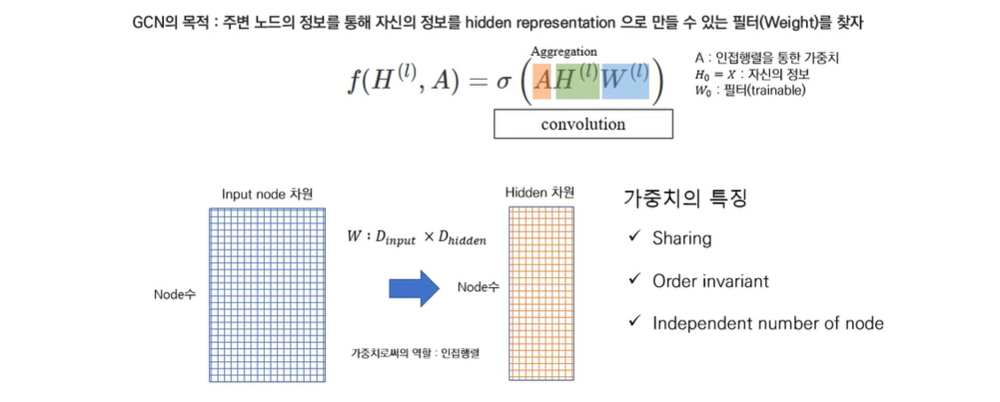
Dataset
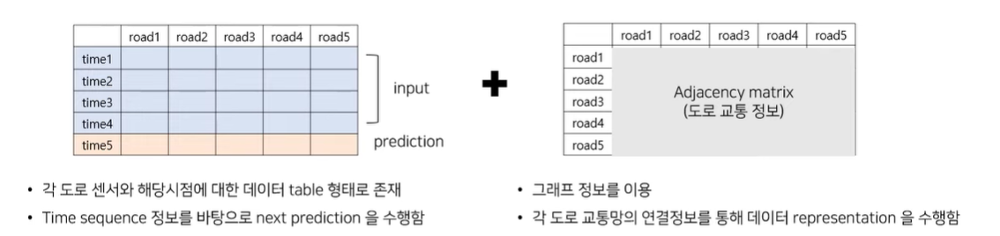
STGCN
Framework
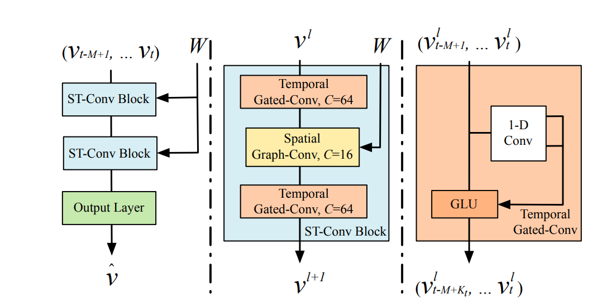
본 논문에서는 2개의 ST-Conv Block으로 구성되어있다. [가운데 그림] 각 ST-Conv Block은 2개의 Temporal Gated-Conv와 그 사이에 Spatial Graph-Conv을 포함하고 있다. 여기서 Spatial Graph-Conv는 GCN1이고, [오른쪽 그림] Temporal Gated-Conv는 오른쪽 그림과 같음.
Framework: Temporal Gated-Conv
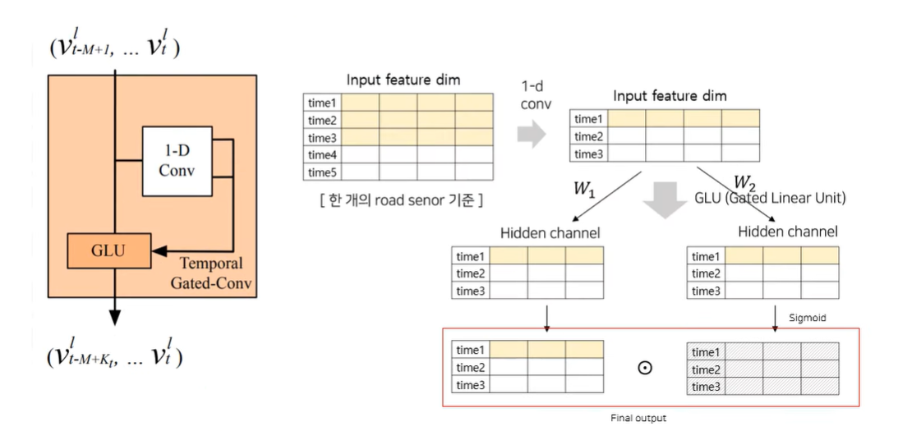
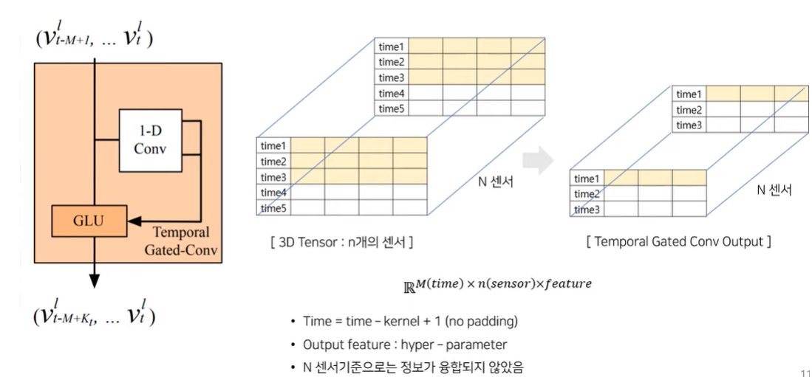
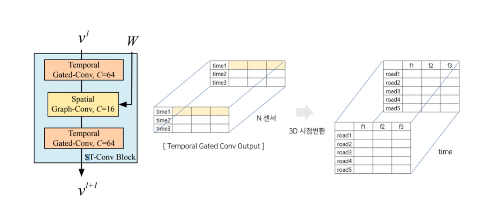
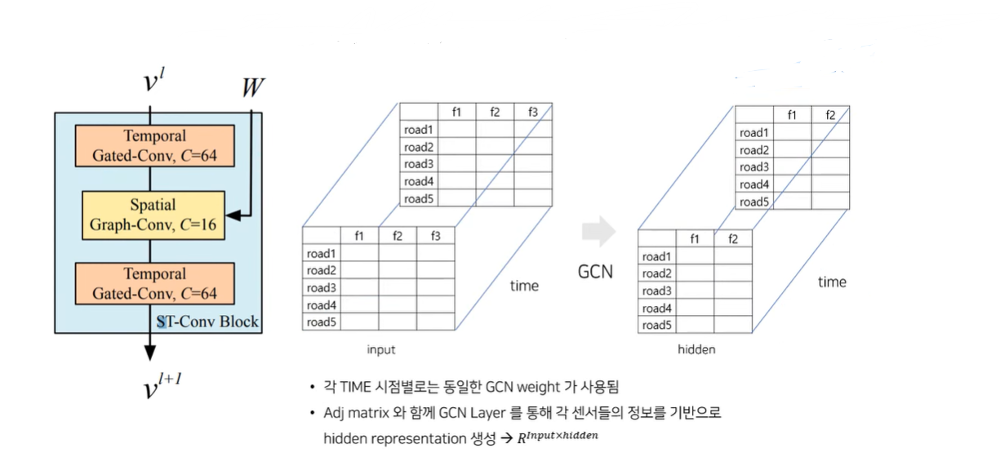
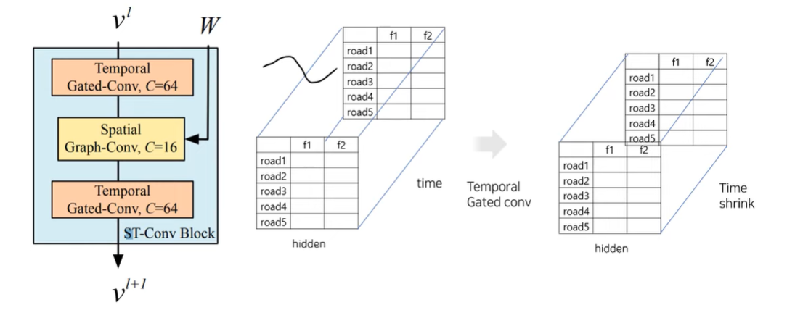
Framework: Ouput layer
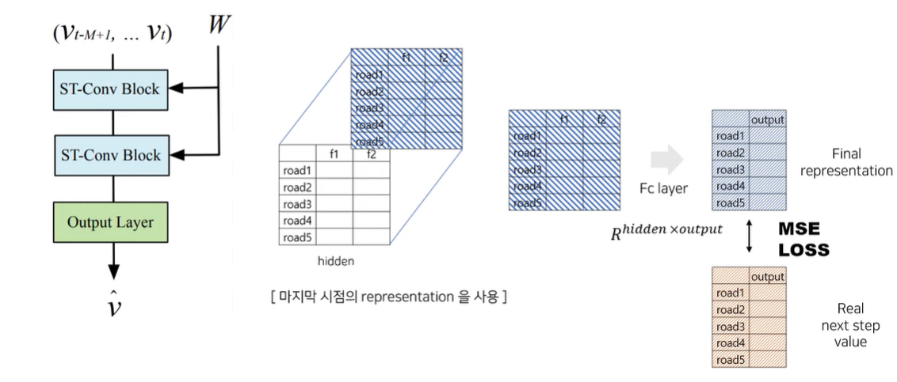
Experiments and Dataset Description
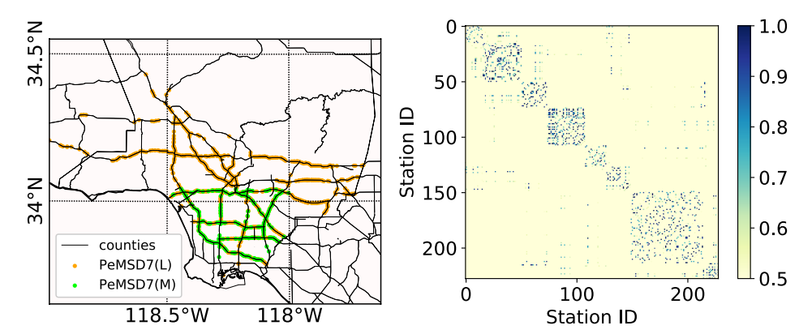
- 각 지점의 센서에서의 교통량
- 해당 지점간의 인접 weight 정보: weight는 실제 거리를 반영하여 생성\(\to\) 즉, 일정거리 이상이면 edge 생성X
- Time 정보는 5분단위로 갱신: 하루기준 288(12*24) data 생성
원래 인접행렬은 1 혹은 0으로 구성되어 있는데 거리 기반으로 weight를 다시 줌. 거리가 가까울 수록 weight을 더 주고, 멀수록 작은 weight. 많이 멀어질수록 값을 아예 \(0\)으로 바꿔 weight을 주는 adjacency matrix를 생성.
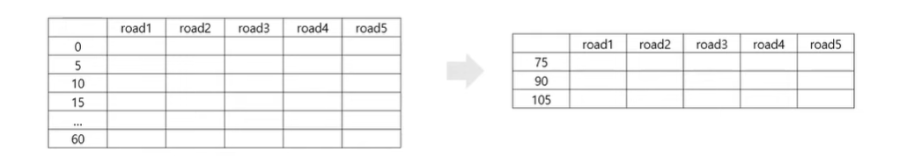
데이터 갱신은 5분마다 이루어지기 때문에 하루에 12*24=288개의 row가 생성되는 데이터셋으로 진행함.
총 60분을 통해 다음 15분/30분/45분 후의 지점을 개별적으로 예측하도록 함. (세가지를 따로 따로 예측)
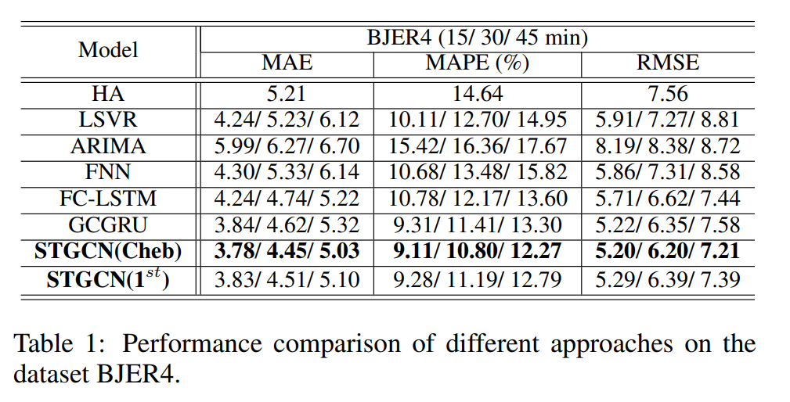
- STGGCN을 사용한 마지막 두 모델이 우리가 알고있는 locality에 대한 edge가 실제 그래프의 지도와 유사한 방법론이기 때문에 locality가 더 정확하다. 연결성에 대한 정보가 geometric하게 일치한다는 것을 직관적으로 알 수 있다.
모델 비교
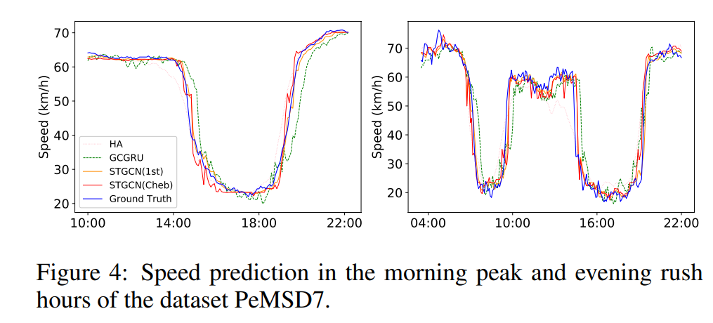
- STGCN: Cheb conv 기반으로 layer를 구성함. (kernel:3) – \(k-1\) approximation
- STGCN(\(1^{st}\)): Cheb conv kernel 1
- GCGRU: GCN + GRU 순차적으로 학습하는 구조 (GCN을 통해 결과값을 뽑아둔 후 나온 값들을 다시한번 GRU에 태워서 순차적으로 뽑아내 output을 만들어냄(Conv-LSTM과 비슷)
- Rush Hour 구간을 제안한 방법론이 GRU를 사용하는 것보다 더 대응을 잘함.
- GRU를 사용하는 방법론은 특성상 학습 및 추론에 시간이 더 오래걸림.
GRU 특성상 정보를 순차적으로 받아오기 때문에 정보가 변하는 것을 캐치하는 것이 조금 느리다.
Footnotes
논문에서는 Cheby-Conv↩︎